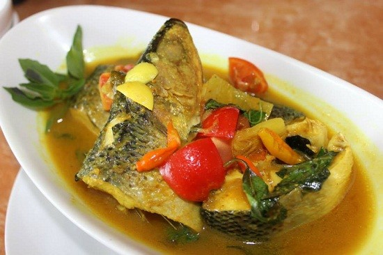

<< Daftar Resep
Kuliner Khas Makassar - Bandeng Pallu Mara
bahan |
cara membuat

Bendeng Pallu Mara
Porsi untuk 3 sampai 4 orang
Bahan- bahan :
- 500 gr ikan bandeng segar, bersihkan, potong jadi 2
- 1 ikat Kemangi, petik daunnya .
- 2 buah Tomat, potong 4 .
- 3 siung Bawang Merah, iris tipis.
- 2 siung Bawang Putih, iris tipis .
- 2 cm jahe, cincang halus (boleh skip) .
- 5 buah Cabai Merah, iris serong .
- 5 buah Cabe Rawit Merah .
- 2 batang Serai, memarkan .
- 5 lembar Daun Jeruk .
- 1-2 sdm air Asam Jawa .
- 1/2 sdt Merica Bubuk .
- 1 sdt Gula Merah, sisir halus.
- 500 ml Air .
- Secukupnya Kaldu ayam/sapi .
- Secukupnya Garam .
- Minyak untuk menumis
- Bumbu halus .
- 5 siung Bawang Merah .
- 3 siung Bawang Putih .
- 1 sdt Kunyit Bubuk .
- 1 sdt Ketumbar Bubuk .
Langkah
- Tumis bumbu halus sampai harum.
- Masukkan irisan Duo Bawang, irisan Cabe Merah, Rawit Merah, Jahe, Daun Jeruk, Serai.
- Masukkan Bandeng, tumis ±3 menit.
- Masukkan air, air asam jawa, merica, kaldu bubuk, gula merah, garam.. Masak sampai bumbu meresap dan ikan matang. Tes rasa. Masukkan tomat, masak lg dengan api kecil hingga tomat layu. Angkat & sajikan.
- Tata daun kemangi, simpan ikan di atasnya lalu siram dengan kuahnya.. Sajikan panas lebih enak.
- P.S: di resep aslinya ga pake jahe yaa gengs, ini aku pake soalnya lg ga punya jeruk nipis .
Kembali ke atas
<< Daftar Resep